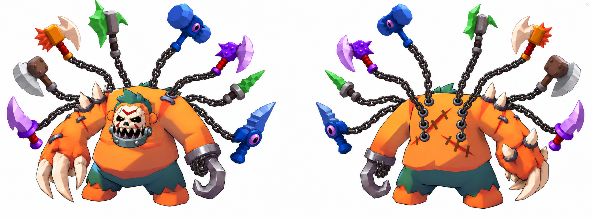

01 Как переключать вид
Над плеером две кнопки:
- ▦ Кубики — чистый 3D-блокаут, как в твоём примере: однотонные блоки, у каждого персонажа свой цвет (Пудж оранжевый, крестьяне синие, жёлтые и фиолетовые), окружение песочное. Огонь — оранжевые кубы.
- ✎ Отрисовка — та же сцена и те же камеры, но в мультяшном виде: чёрные контуры, вечерний свет, светящиеся глаза маски, пламя и дым.
Режим меняет и плеер, и все превью в карточках шотов. Кнопка «Карта сверху» показывает в углу вид сверху с конусом текущей камеры.
02 Концепт
Логлайн
Монстр-Пудж проламывается сквозь дом прямо на камеру. Деревня тонет в огне и панике. Он раскручивает цепи с оружием, сносит повозки, вырывает крюком колокольню. Потом выходит из дыма и рычит прямо в объектив, на весь экран.
Почему остановит скролл
- Первый кадр: крестьянин в ужасе бежит на камеру, за ним над крышей нависает силуэт монстра. Дом вот-вот взорвётся.
- Масштаб: Пудж в 4 раза выше людей, цепи с 8 видами оружия.
- Пик: рык в камеру крупным планом, ударная волна бьёт в объектив.
- Мотивация: power fantasy, «стань этим монстром». Оружие на цепях — витрина лута и прокачки.

the Monster Ogre · @image1
Оранжевый гигант, маска-череп с зубастой железной челюстью на груди, зелёный ирокез. Левая рука — когти с шипами, правая — крюк на цепи. Из спины на цепях торчат 8 видов оружия: молоты, топоры, кинжалы, булавы.
Мир и правила
- Деревня: площадь с колодцем и повозкой, дома с соломенными крышами, улица на юг, колокольня у улицы.
- Масштаб: Пудж ~7.5 м, крестьяне 1.7 м.
- Направление: Пудж идёт с севера на юг (на камеру), крестьяне бегут от него.
- Без крови: крестьян не убивают, они разбегаются и падают.
03 Шот-лист
Слева кадр из 3D-сцены (в текущем режиме), посередине вид сверху с конусом камеры. Наведи на превью — шот проиграется.
04 Звук
| # | Время | Звук | Склейка |
|---|
05 Как это пойдёт в Seedance (после апрува)
Вариант 1: промпт + рефы
Одна генерация на 10 с, шоты по таймингу из этого блокинга. Рефы: Монстр-Пудж и стиль локации.
Вариант 2: промпт + видео-блокаут
Кнопкой «Записать видео» сохраняем чистые кубики и даём их Seedance 2.0 как референс движения и ракурсов, как в твоём примере. Так камера и тайминг повторятся точнее. Модель принимает видео-референсы; конкретный формат проверю по API перед запуском.
Риски
- 8 видов оружия на цепях: движок может упростить их число или форму
- Шот 5: крюк, летящий к колокольне, — тонкое действие
- Шот 7: рык должен быть без слов; маска с челюстью на груди, а не на голове